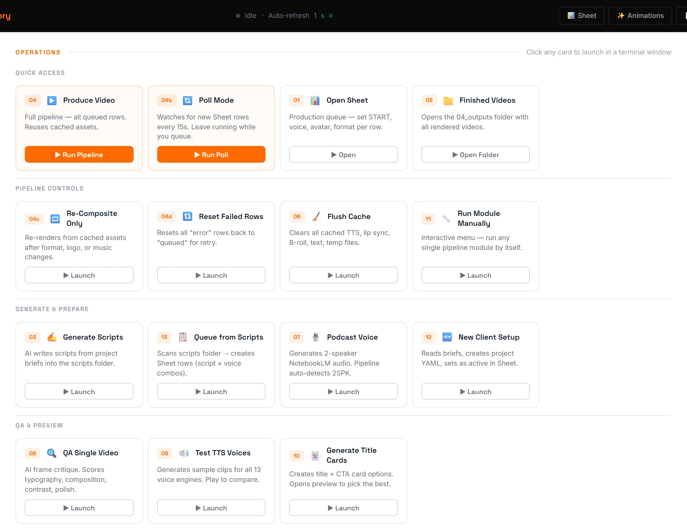
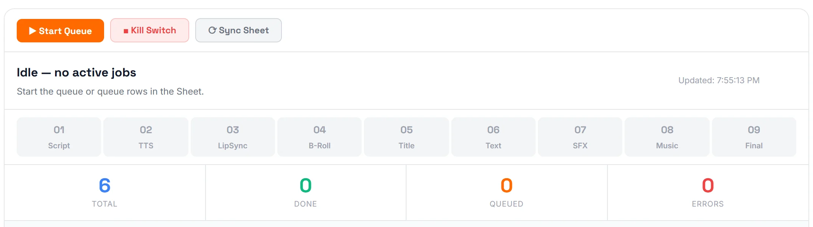

UGC content has the same shape every time. Hook, talking-head, B-roll, payoff, brand sting. The pieces are repetitive, the editing is not. So I stopped editing and started scheduling: one row in a Google Sheet becomes one finished video, and the GPU does the rest.
01The problem
Producing UGC at volume looks easy from the outside and is brutal from the inside. A creator delivers a script. An editor records voiceover, picks a voice, generates a talking-head, hunts B-roll, lays in captions, brands the bumpers, exports, QCs, re-exports. Forty minutes per video on a good day. Multiply that by twenty videos a week and the bottleneck is no longer creative, it's clerical.
Worse, every minute of that work is the kind machines are good at: picking a track, aligning audio to video, dropping in lower-thirds, cutting on the beat. Humans burn out. Pipelines don't.

02The approach
The production queue lives in a Google Sheet. Each row is one video. Dropdowns pick voice, avatar, animation style, format (UGC / Ad / Podcast) and two-speaker mode. The operator ticks a START checkbox; the pipeline picks the row up on the next cycle, writes status back to the Sheet as it works, and posts the rendered MP4 to a finished folder when it's done.
Under the hood it's a chain of small, replaceable modules. TTS, lip-sync, B-roll fetch, caption render, brand sting, final composite. Each module reads from a shared cache so the same voice or avatar never gets regenerated twice. A pipeline-wide kill switch writes a stop flag to disk and every module checks it between steps, so a runaway render never costs more than the current shot.

"The Sheet is the UI. The pipeline is the renderer. Editors became reviewers, and weekly throughput went up 5×."
03Three output styles, one pipeline
The same engine produces three distinct video formats, picked by a single column in the Sheet:
- UGC. Talking-head avatar over B-roll, with text overlays and branded title cards. The classic creator format, hook, deliver, sign-off.
- Ad. Text animations with voiceover over B-roll. No avatar. Clean commercial pacing for product or campaign work.
- Podcast. Multi-speaker discussion with two avatar circles (male + female) facing each other. The audio is diarised by pitch analysis before lip-sync, so each speaker drives their own avatar independently.

04Automated quality control
Every video passes through a vision-AI gate before being marked done. The system extracts representative frames and scores them against design criteria. Typography, contrast, framing, brand consistency, motion smoothness.
- Score ≥ 7 → auto-approved, posted to the finished folder.
- 4–6 → flagged for human review with the failing criteria attached.
- < 4 → automatic revision with noted corrections, re-runs through the pipeline.
- Lessons Learned table, every flagged issue gets logged so the QA prompt itself improves over time. The same problem is never raised twice.
05What's next
The architecture was built as a personal bottleneck-buster and grew into a reusable framework, the module pattern, the live dashboard, the smart caching, the Sheet-driven control panel. Ad agencies, content studios, e-learning platforms and social-media teams can drop this structure into their own workflow with minor adapter work.
The next evolution is pre-production automation. AI-generated briefs feeding directly into project folders, per-project asset discovery, voice files bypassing TTS when a real read exists, and a single command that takes a client brief to a populated queue ready to render. The pipeline keeps moving the bottleneck upstream until there isn't one.